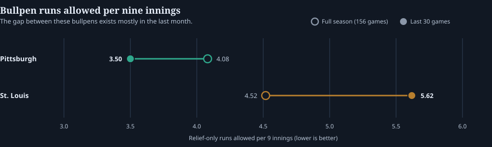

Pirates −1.5: Why the Model Likes Pittsburgh
The obvious numbers favor St. Louis. The part of the matchup our model likes is what happens after the starters leave.
The Pick
Best of seven prices in our snapshot; DraftKings and Caesars were next at +153. Model estimates are experimental. Confirm the line and timestamp before acting on this.
The model likes Pittsburgh to win by multiple runs.
At first glance, that is a little surprising.
St. Louis has scored more runs recently, and Cardinals starter Andre Pallante has slightly better recent run-prevention numbers than Pittsburgh starter Jared Jones.
So why Pittsburgh?
The bullpen.
The Game May Be Decided After the Starters Leave
Neither starter has consistently been working deep enough to take the bullpen out of the equation.
That makes the recent difference between these relief staffs important.
Over the last 30 games:
| Team | Bullpen RA/9 |
|---|---|
| Pittsburgh | 3.50 |
| St. Louis | 5.62 |
That is a massive gap.

Pittsburgh’s bullpen has also been covering about 4.5 innings per game recently, while St. Louis’ relievers have averaged about 4.3.
So if both starters get through roughly five innings, nearly half the game could be handed to the part of the matchup where Pittsburgh has had the clear recent advantage.
That is the main reason the model likes the Pirates despite some of the more obvious numbers pointing toward St. Louis.
Jared Jones Helps the Case
Jones has also shown signs that Pittsburgh may be allowing him to work deeper into games.
His last three starts:
- 6 innings, 91 pitches
- 7 innings, 90 pitches
- 5 innings, 91 pitches
That is encouraging for Pittsburgh.
Jones does not necessarily need to dominate. If he can get through five or six innings, Pittsburgh can turn the game over to the stronger recent bullpen without asking that group to cover the entire night.
That creates a reasonable path to a multi-run Pirates win.
Why We’re Not Calling It a Slam Dunk
There is an important catch.
The bullpen advantage looks much smaller when you zoom out.
Over the full season, Pittsburgh’s bullpen has allowed 4.08 runs per nine, compared with 4.52 for St. Louis.
That’s an advantage — but nothing like the enormous gap we’ve seen over the last month.
Jones’ heavier workload is also based on only three starts.
So the model is putting considerable weight on recent trends.
Maybe those trends represent real changes.
Maybe Pittsburgh’s bullpen really is pitching better, St. Louis’ bullpen really is struggling, and Jones really has earned a longer leash.
But recent baseball performance can also be noisy.
That’s why we view this differently from a high-confidence model play.
The Bottom Line
The case for Pittsburgh −1.5 is not that the Pirates have the better offense or the better starting pitcher.
They don’t, based on the recent numbers we’re using.
The case is that this game is likely to spend several innings in the bullpens — and lately, that matchup has heavily favored Pittsburgh.
If Jones can give the Pirates five or six solid innings, the model sees Pittsburgh having a meaningful advantage in the second half of the game.
Fourth & Value lean: Pittsburgh −1.5.
It’s a play we like, but not one we’re treating as a major conviction bet.
The recent bullpen numbers are compelling enough to create the edge.
They’re also recent enough to keep us cautious.
That’s the bet: Pittsburgh −1.5, with the bullpen doing most of the work.